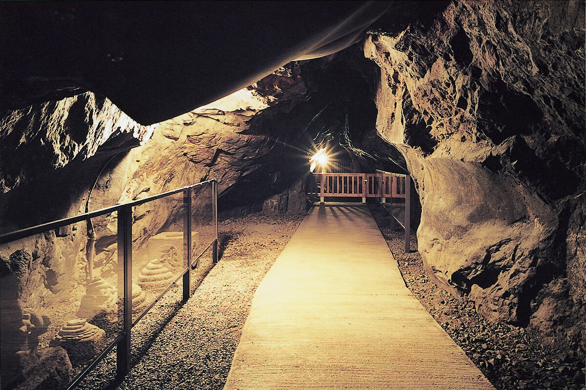

江の島の入口から江島神社までの参道に連なる歴史ある商店街です。
旅館や飲食店、土産物店などが並び、多くの観光客で賑わっています。
湘南名物の生しらすやたこせんべいが人気です。
生だこを185°Cの高温でギュッと鉄板でプレスして焼く「丸焼きたこせんべい」は、江の島の食べ歩きグルメの定番のひとつ。
赤鳥居近くの『あさひ本店』は連日長蛇の列ができるほどの人気店です。
1枚のせんべいを焼くのに2～3匹のたこを丸々使用しているそうで、表面にはたこの姿がくっきりと見て取れます。
焼き立てのせんべいは熱々のパリパリ！実際に手に持ってみると、顔が隠れるほどのその大きさに驚くことでしょう。ほんのりピリ辛の醤油風味で、お酒との相性もよさそうな味わいです。そのままかじりついたり、一口サイズに割ったりとお好きなように食べてください。
弁財天仲見世通りを抜けると見えてくるのが朱の鳥居です。彩り鮮やかなのでとても目立ちます。
現在の鳥居は、昭和11年（1936年）山田流筝曲の家元・林敏子が再建・寄進したものです。
入母屋造の社殿は天保13年（1842）の再建。昭和51年（1976）に新築された拝殿の天井部分には「八方睨みの亀」が残されています。
江戸時代の画家・酒井抱一が描いた原画は歳月と潮風で金箔等の損傷が激しく、江島神社宝蔵に保存されており、現在天井にあるのは片岡華陽による模写です。
養和2年（1182）に源頼朝が寄進したといわれる石鳥居もあります。
島の西南端、岩屋の周辺に広がる、隆起現象でうまれた海食台地です。
屏風のように連なる断崖の真下にあり、打ち寄せては砕ける波と、富士山の向こうに沈む夕日の美しさで知られ、「かながわの景勝50選」にも選ばれています。
磯釣りの名所としても知られ、休日には多くの太公望でにぎわっています。
稚児ヶ淵の名前は、かつて稚児の白菊がここから身を投げたことから付いたといわれています。
島の最奥部にある海食洞窟。
古くは弘法大師や日蓮上人も修行したといわれ、江の島信仰発祥の地として崇められてきました。
養和2年（1182）には源頼朝が奥州藤原秀衡征伐を祈願したとも伝えられています。
奥行152ｍで富士山の氷穴に通じているといわれる第一岩屋と56ｍで龍神伝説の地といわれる第二岩屋があり、ロウソクの炎に照らし出された石像や岩壁が神秘の世界に誘ってくれます。
